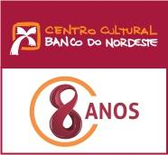

CCBNB-Sousa
8 anos de cultura como forma de desenvolvimento
Postado em: 05/06/2015
O Centro Cultural Banco do Nordeste (CCBNB) é uma ação concreta da política de desenvolvimento do Banco do Nordeste. Inaugurado na cidade de Sousa-PB em 25 de junho de 2007, o CCBNB-Sousa completa 8 anos de atuação na região do Alto Sertão Paraibano. Desta forma, o CCBNB tem se firmado no cenário cultural Nordestino como um espaço onde é permitido experimentar a diversidade de conceitos, estilos e suportes, oferecidos em sua programação. Isto significa trabalhar cada Programa relacionando-o a um contexto mais amplo, estabelecendo pontes entre saberes e transformando-se em um lugar de encontro dos vários públicos para usufruir e refletir sobre arte e cultura.
O CCBNB oferece a seus visitantes uma variada programação diária e gratuita, enquanto dedica-se a formar um público crítico. Tendo como princípio que uma ação cultural efetiva é resultado do diálogo com os artistas, com as comunidades e o público em geral, o Centro Cultural Banco do Nordeste trabalha sua programação a partir de um edital anual onde recebe propostas de artistas nas áreas de cinema, artes visuais, música, artes cênicas, literatura, história, patrimônio e atividades infantis.
Nos espaços do Centro Cultural Banco do Nordeste o público descobre o prazer de conhecer e apreciar a arte e a cultura: do Nordeste, do Brasil e do Mundo.
Kleyner Arley - Gerente do Centro Cultural Sousa